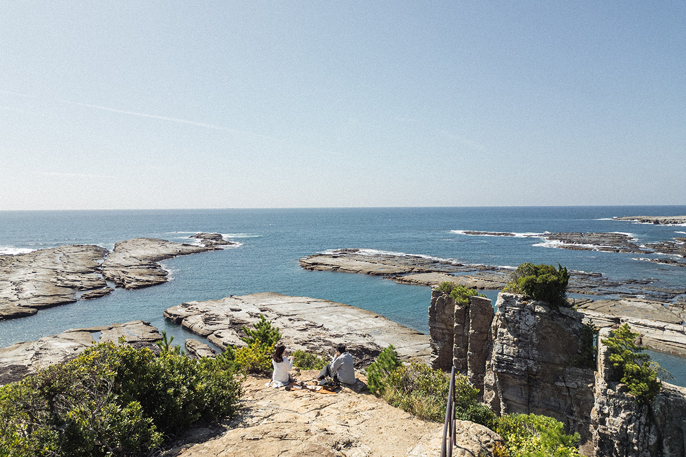
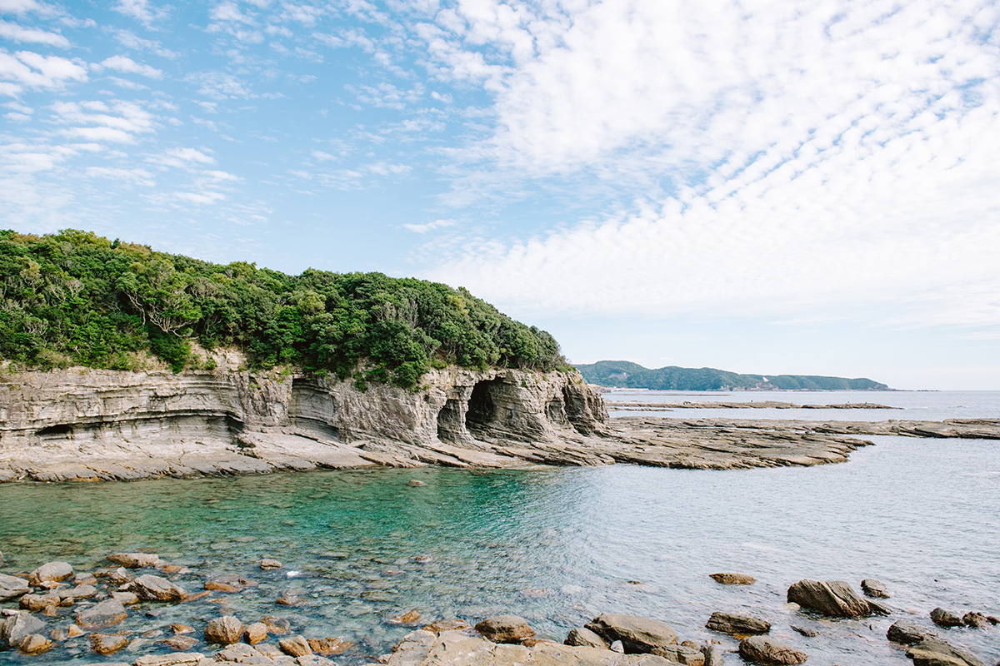
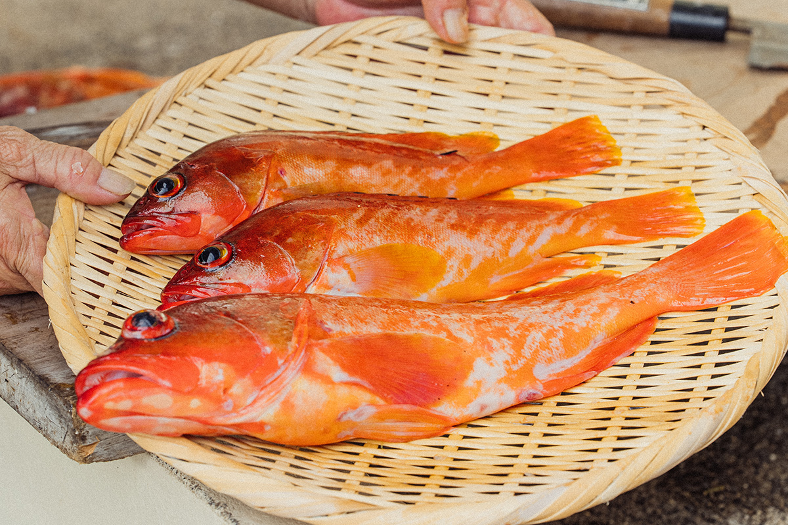
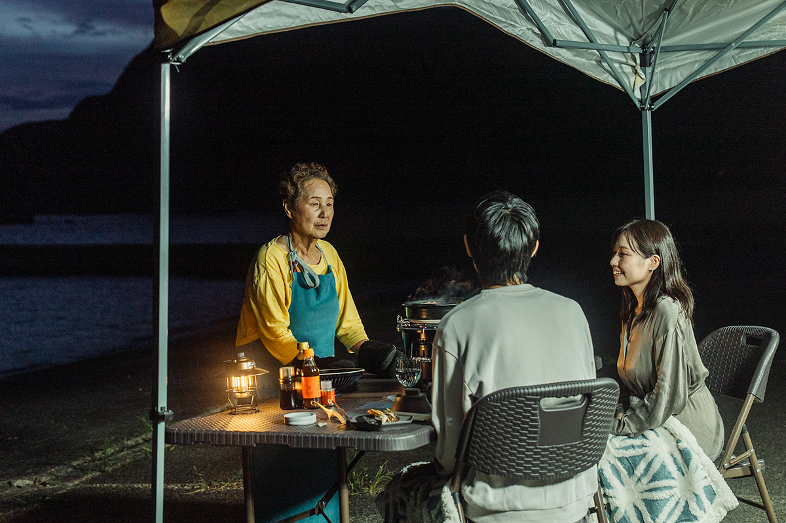
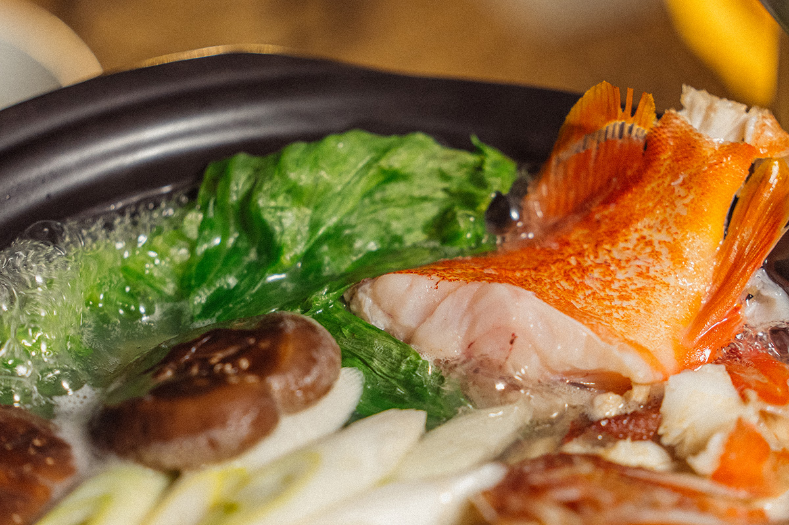
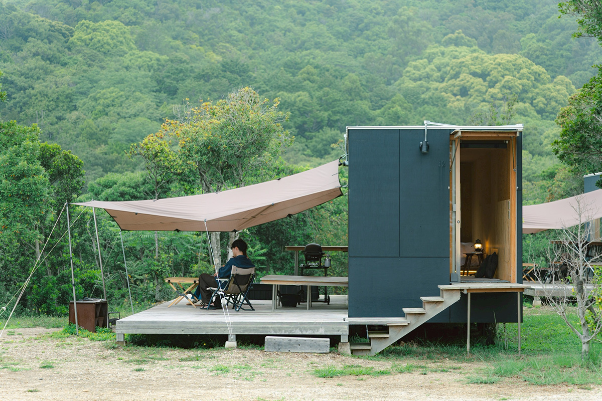
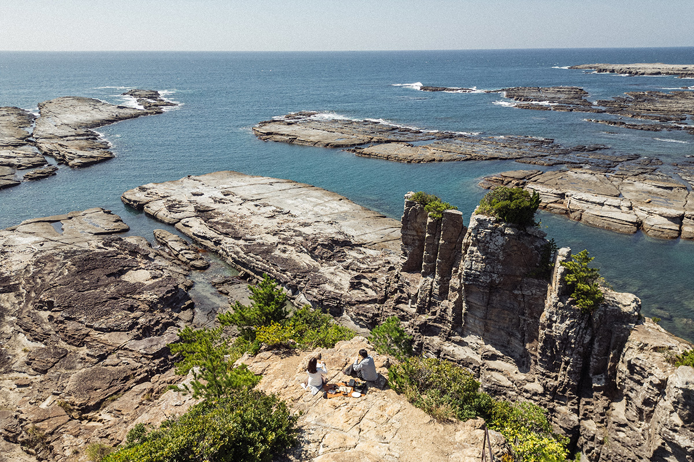
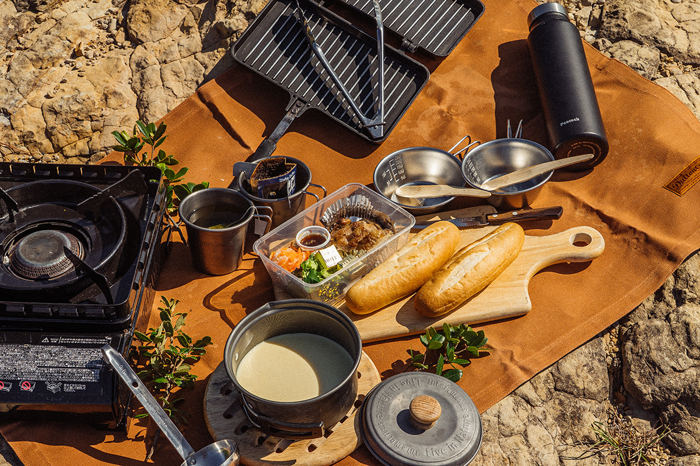
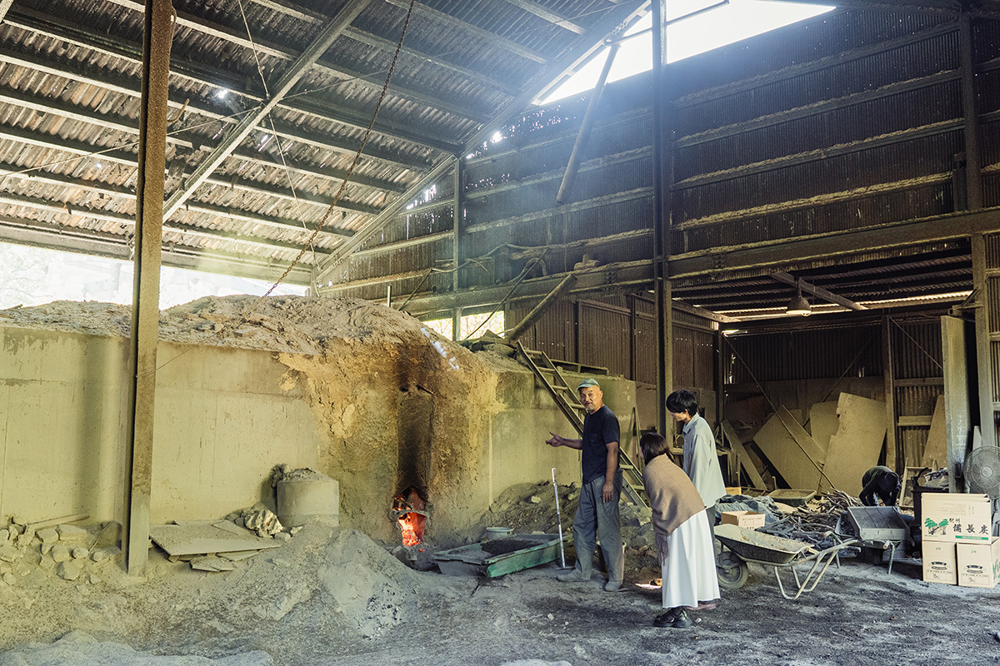

Префектура Вакаяма · Окусирахама · отдых и еда
Окусирахама: ужин в рыбацком порту и ночь у моря для одной пары в день

Если от шумного курорта Сирахама проехать двадцать минут на юг, начинается Окусирахама, побережье без набережных и отелей. Здесь принимают всего одну пару в день: ужин в рыбацком порту, ночь у моря и утро над водой.
Природа
Берег, каким его оставило море
Сирахама известна белым песком пляжа Сирарахама и отелями вдоль онсэнов. Стоит отъехать от них к югу, и пейзаж меняется: дорогу сопровождает крутой, изрезанный берег. Это район Хики в Окусирахаме, на территории национального парка Ёсино-Кумано. Природа здесь осталась такой, какой была до появления туристов.

Кумагусу Минаката, натуралист, чьё имя в Сирахаме знает каждый, считал, что природа совершенна сама по себе. Всё в ней связано друг с другом и находится в равновесии без участия человека. На берегу Окусирахамы эту мысль понимаешь не головой, а через шум ветра и запах прибоя. Здесь есть пещера Торигэ, которую волны вытачивали веками, и небо, которое всё время меняет цвет. Среди нетронутой природы напряжение будней постепенно уходит, и возвращается свой собственный ритм.
Внутрь пещеры заходить опасно: своды могут обрушиться.
Ужин
Стол в рыбацком порту
Здесь предлагают не просто ужин и ночлег. Тур «Окусирахама: гастрономия под шум прибоя» рассчитан на одну пару в день. Главное событие поездки это ужин на закате в рыбацком порту Икоги. Обычно сюда не пускают никого, кроме рыбаков.

Местные рыбаки уступают причал на один вечер, и на нём накрывают стол. Перед глазами горизонт, за которым садится солнце, а слышно только волны и морских птиц. В таком тихом месте легко подстроиться под ритм природы, и ужин из того, что дала эта земля, начинается сам собой.
Кухня
Вкус южного Кисю
На столе морепродукты, которые в то же утро подняли из моря у Хики. Готовит жена одного из местных рыбаков, вся жизнь которой связана с морем.

Сначала подают набэ из акахаты. Бульон впитывает вкус рыбы и согревает до самых костей. Потом в этом бульоне ненадолго окунают листья салата: «латук-сябу-сябу» в рыбацких деревнях едят давно.

Затем идут лангусты, медленно обжаренные на углях бинтётан из Кисю, и рыба, которую хозяйка вялит сама. Завершает ужин рисовая каша дзосуй со сливой нанко-умэ из Кисю. Это еда, в которой чувствуется гордость местных жителей и жизнь рыбаков, и в ресторане её не повторить.
Ночлег
Тишина национального парка
Ночь проводят в глэмпинге «Ин зе аутдор Сирахама Сихара-кайган» на побережье Сихара. Он стоит рядом с пещерой Торигэ, и в нём нет лишних украшений: главное здесь окружающая природа.

Ночью наступает глубокая тишина, какая бывает только в заповедных местах. Слушаешь, как трещит костёр, пьёшь местный чай «Кавадзоэ-тя» и разговариваешь с близким человеком. Над головой звёздное небо, дыхание само подстраивается под природу, и мысли постепенно успокаиваются.
Утро
Завтрак над морем

Утром завтракают на смотровой площадке, глядя, как солнце играет на воде. В меню горячие сэндвичи с курицей «Ки-но куни микан-дори»: этих кур кормят кожурой мандаринов из Вакаямы. Местные продукты на свежем воздухе кажутся ещё вкуснее.

После завтрака рекомендуем дойти до пещеры Торигэ: добраться до неё можно только в отлив. Внутрь заходить нельзя, но можно пройти по камням, которые волны шлифовали тысячи лет, и почувствовать силу океана. Лучшего завершения поездки не придумать.
Регион
Путешествие, которое поддерживает край

Чтобы сохранить природу Окусирахамы, город Сирахама принимает оплату тура электронными подарочными сертификатами «Янико». Их получают в благодарность за пожертвование городу по японской системе «фурусато нодзэй», налогового вычета за поддержку регионов. Путешественник отдыхает, помогает месту и, возможно, однажды вернётся.
Для тех, кто хочет остаться подольше, есть дополнительные программы: выход в море с рыбаком на рыбалку и выдержка вина. Гости привозят любимое вино или сакэ, и бутылки около полугода выдерживают на морском дне.
Тур «Окусирахама: гастрономия под шум прибоя» (1 ночь, 2 дня)
- Даты
- набор с 1 ноября 2025 года до конца февраля 2026 года; с марта участие по договорённости, меню меняется
- Номера
- одна пара (2 человека) в день, бронь не позднее чем за неделю
- Цены / Вход
- 82 000 иен за двоих с налогом в 2026 году (ночлег в одном номере с завтраком и ужин первого дня)
Глэмпинг «Ин зе аутдор Сирахама Сихара-кайган»
- Адрес
- префектура Вакаяма, уезд Нисимуро, Сирахама, Хики, 1875
- Как добраться
- около 10 минут на машине от съезда Хикигава скоростной дороги Кисэй